1. Pick categories
2. Shuffle a mixed set
The original pack, exactly as printed
Every page from the original PDF, unchanged. Tick each activity when finished, or print one page at a time.
Cover & contents
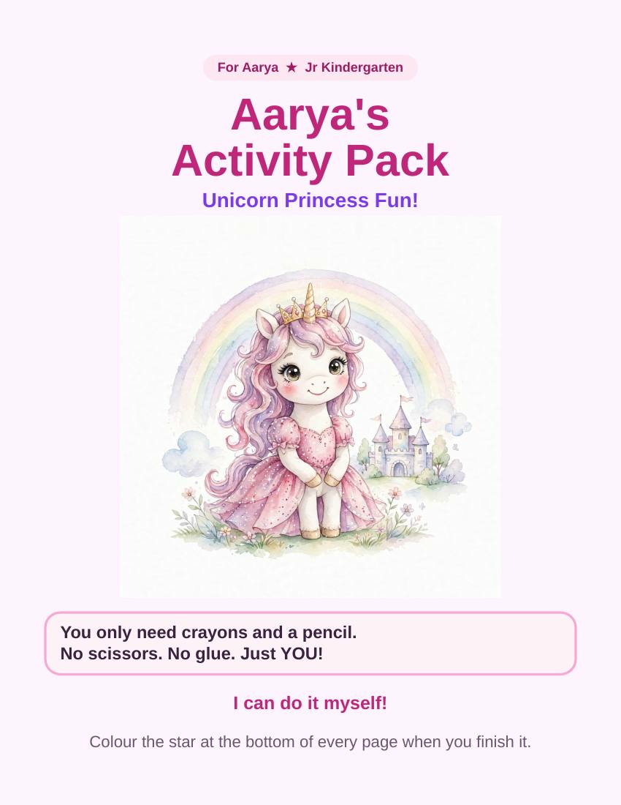
Show the text of this page
For Aarya ★ Jr Kindergarten Aarya's Activity Pack Unicorn Princess Fun! You only need crayons and a pencil. No scissors. No glue. Just YOU! I can do it myself! Colour the star at the bottom of every page when you finish it.
Activity 1: Trace My Name
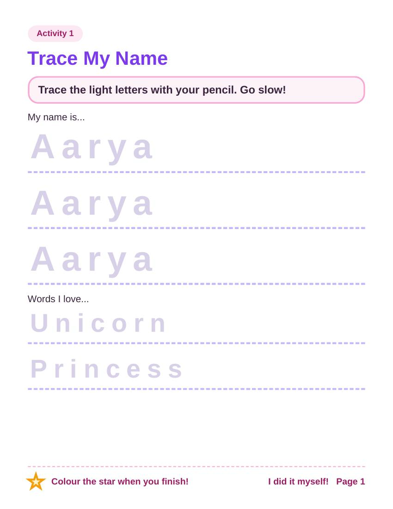
Show the text of this page
Activity 1 Trace My Name Trace the light letters with your pencil. Go slow! My name is... Aarya Aarya Aarya Words I love... Unicorn Princess ★ Colour the star when you finish! I did it myself! Page 1
Activity 2: More Tracing - Words I Love
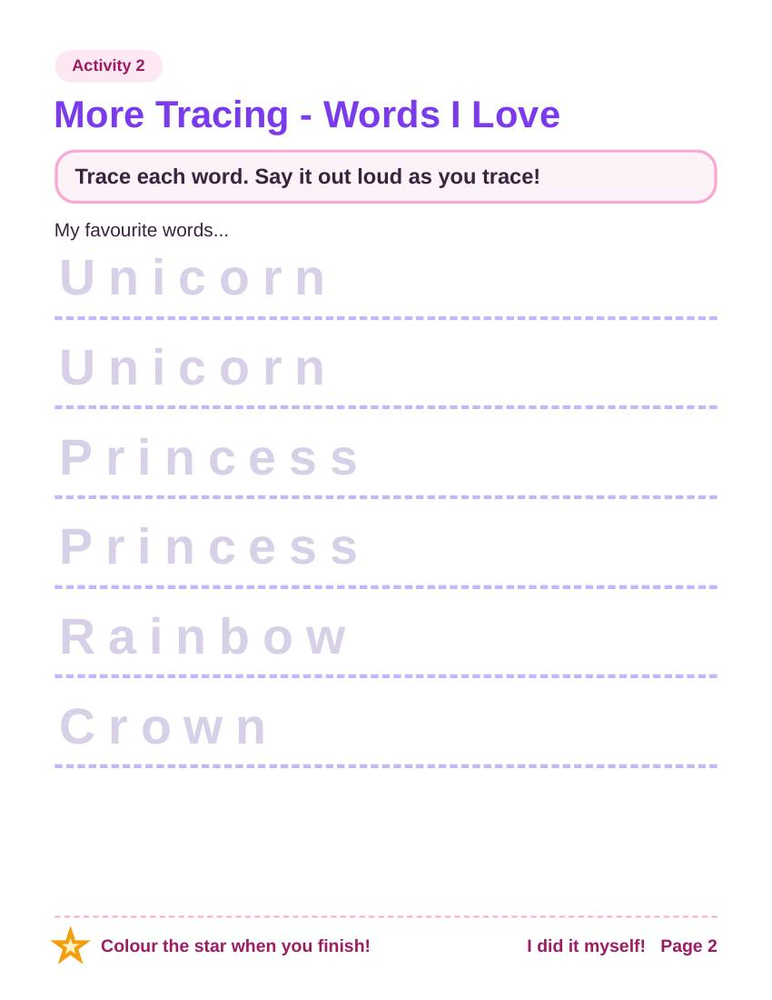
Show the text of this page
Activity 2 More Tracing - Words I Love Trace each word. Say it out loud as you trace! My favourite words... Unicorn Unicorn Princess Princess Rainbow Crown ★ Colour the star when you finish! I did it myself! Page 2
Activity 3: Trace Letters and Numbers
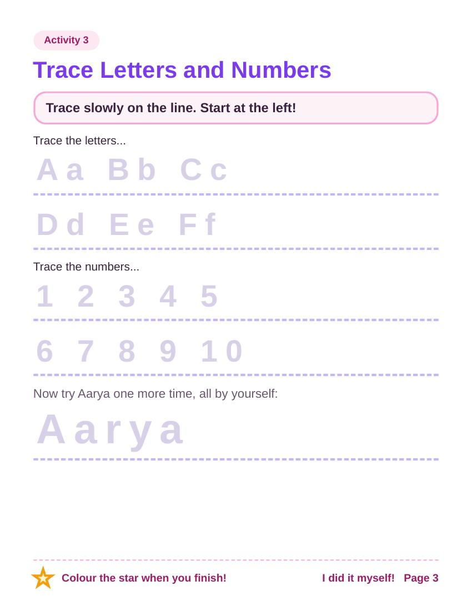
Show the text of this page
Activity 3 Trace Letters and Numbers Trace slowly on the line. Start at the left! Trace the letters... Aa Bb Cc Dd Ee Ff Trace the numbers... 1 2 3 4 5 6 7 8 9 10 Now try Aarya one more time, all by yourself: Aarya ★ Colour the star when you finish! I did it myself! Page 3
Activity 4: Letters A, B, C
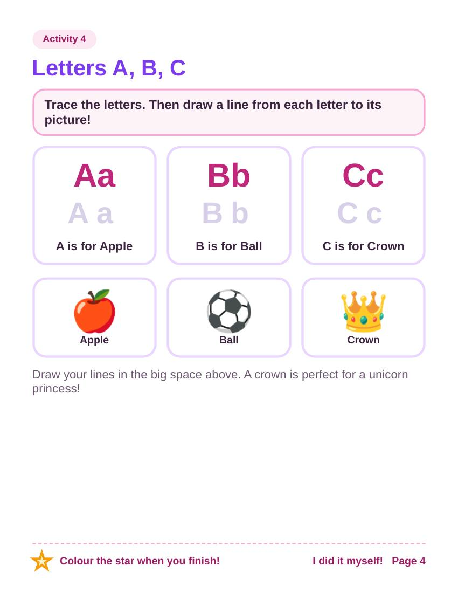
Show the text of this page
Activity 4 Letters A, B, C Trace the letters. Then draw a line from each letter to its picture! Aa Bb Cc Aa Bb Cc 🍎 ⚽ 👑 A is for Apple B is for Ball C is for Crown Apple Ball Crown Draw your lines in the big space above. A crown is perfect for a unicorn princess! ★ Colour the star when you finish! I did it myself! Page 4
Activity 5: Counting 1 to 10
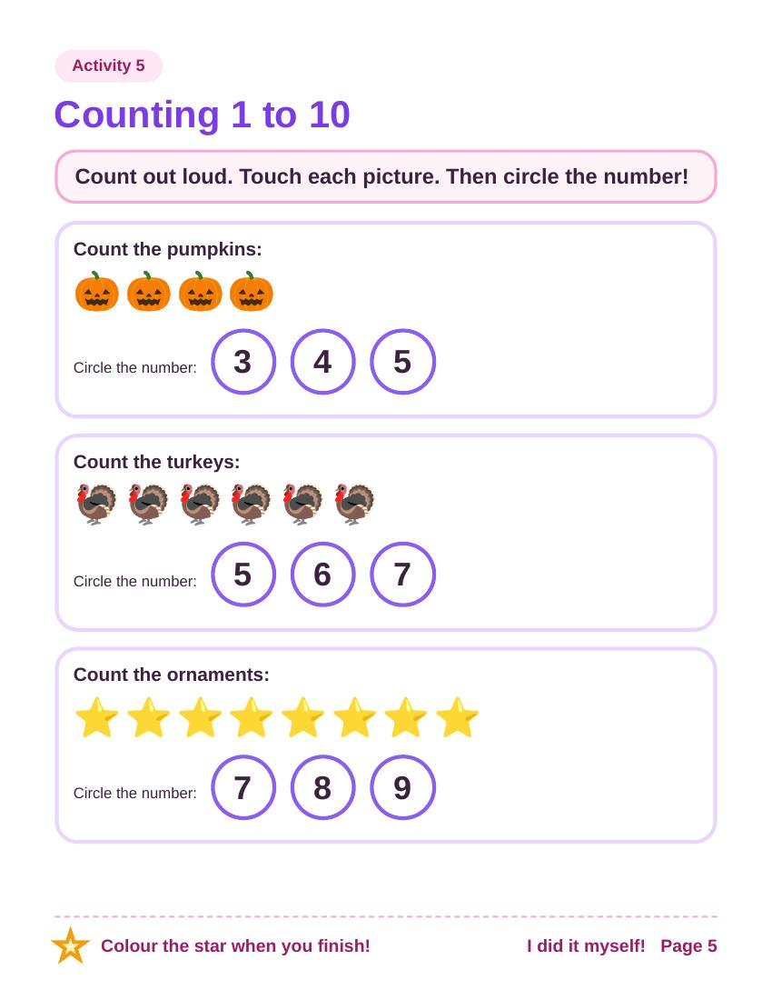
Show the text of this page
Activity 5 Counting 1 to 10 Count out loud. Touch each picture. Then circle the number! 🎃🎃🎃🎃 Count the pumpkins: Circle the number: 3 4 5 🦃🦃🦃🦃🦃🦃 Count the turkeys: Circle the number: 5 6 7 ⭐⭐⭐⭐⭐⭐⭐⭐ Count the ornaments: Circle the number: ★ 7 8 Colour the star when you finish! 9 I did it myself! Page 5
Activity 6: Shapes
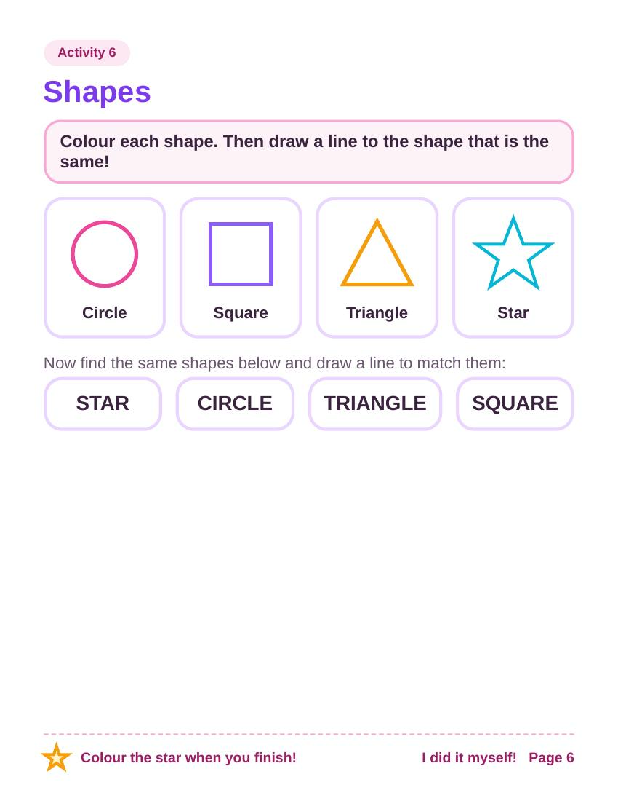
Show the text of this page
Activity 6 Shapes Colour each shape. Then draw a line to the shape that is the same! Circle Square Triangle Star Now find the same shapes below and draw a line to match them: STAR ★ CIRCLE Colour the star when you finish! TRIANGLE SQUARE I did it myself! Page 6
Activity 7: Colour by Number
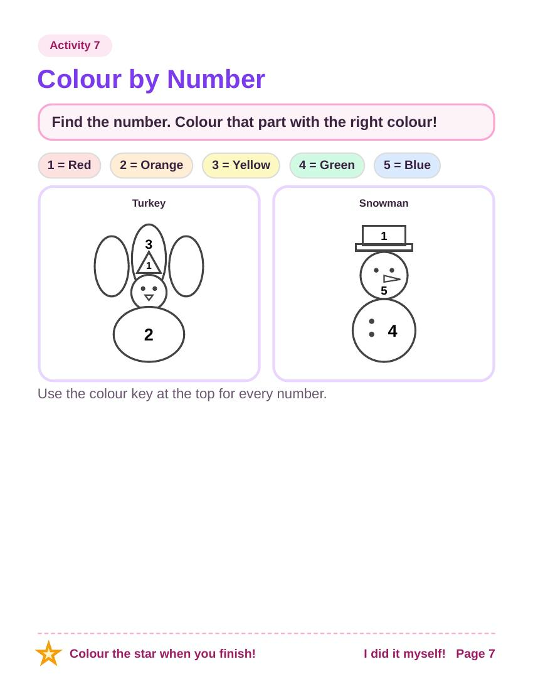
Show the text of this page
Activity 7 Colour by Number Find the number. Colour that part with the right colour! 1 = Red 2 = Orange 3 = Yellow 4 = Green Turkey 3 5 = Blue Snowman 1 1 5 2 4 Use the colour key at the top for every number. ★ Colour the star when you finish! I did it myself! Page 7
Activity 8: Dot-to-Dot 1 to 10
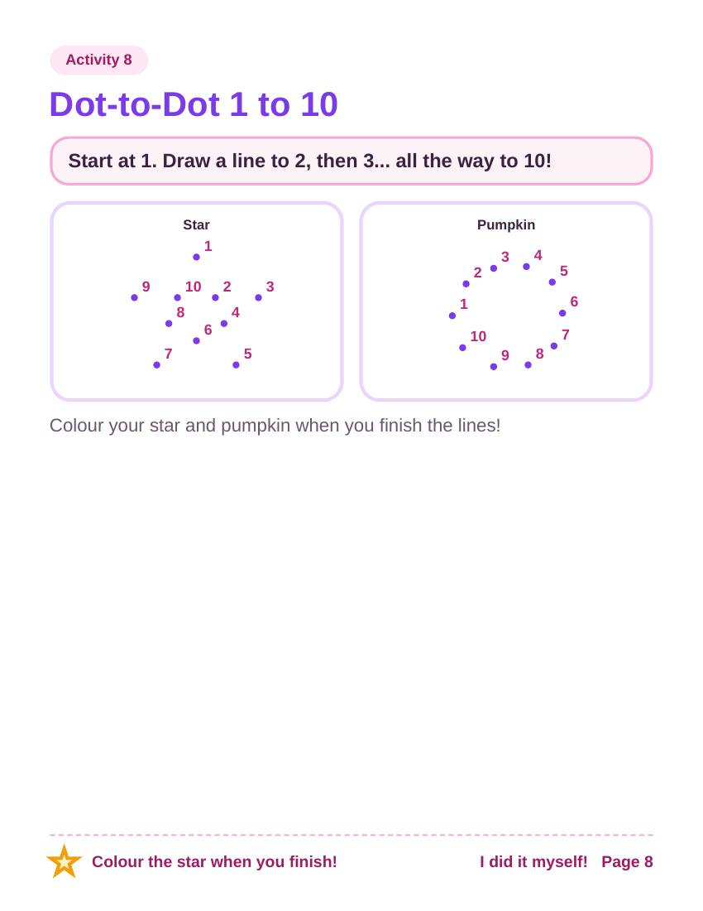
Show the text of this page
Activity 8 Dot-to-Dot 1 to 10 Start at 1. Draw a line to 2, then 3... all the way to 10! Star Pumpkin 1 9 10 2 8 3 4 5 6 1 4 6 7 2 3 7 10 5 9 8 Colour your star and pumpkin when you finish the lines! ★ Colour the star when you finish! I did it myself! Page 8
Activity 9: Help the Turkey!
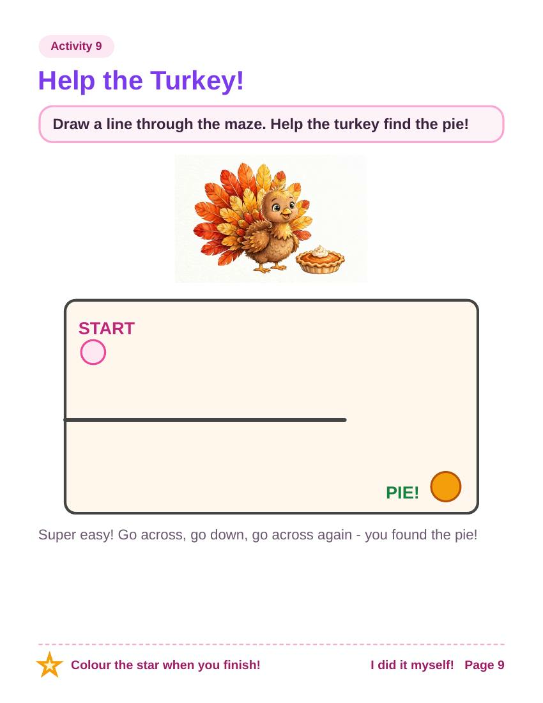
Show the text of this page
Activity 9 Help the Turkey! Draw a line through the maze. Help the turkey find the pie! START PIE! Super easy! Go across, go down, go across again - you found the pie! ★ Colour the star when you finish! I did it myself! Page 9
Activity 10: Spanish with Ms. Gloria
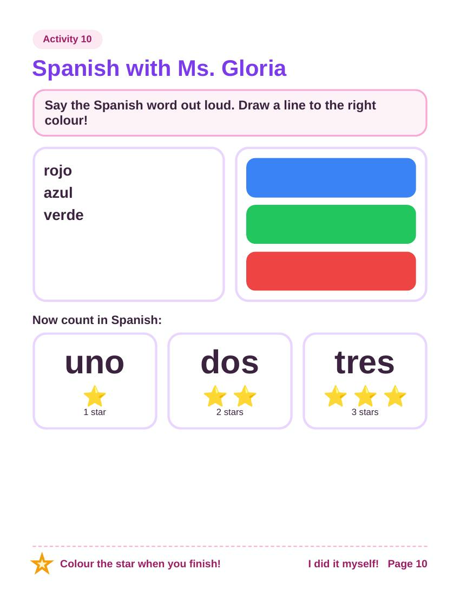
Show the text of this page
Activity 10 Spanish with Ms. Gloria Say the Spanish word out loud. Draw a line to the right colour! rojo azul verde Now count in Spanish: uno dos 1 star 2 stars ⭐ ★ ⭐⭐ Colour the star when you finish! tres ⭐⭐⭐ 3 stars I did it myself! Page 10
Activity 11: Dance Like a Unicorn
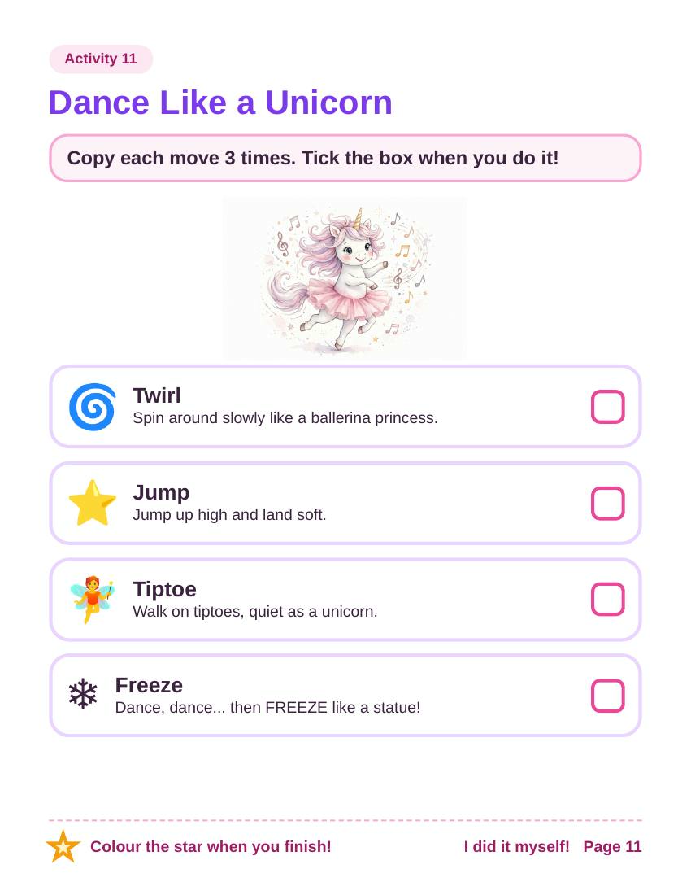
Show the text of this page
Activity 11 Dance Like a Unicorn Copy each move 3 times. Tick the box when you do it! 🌀 ⭐ 🧚 ❄ ★ Twirl Spin around slowly like a ballerina princess. Jump Jump up high and land soft. Tiptoe Walk on tiptoes, quiet as a unicorn. Freeze Dance, dance... then FREEZE like a statue! Colour the star when you finish! I did it myself! Page 11
Activity 12: Animal Moves
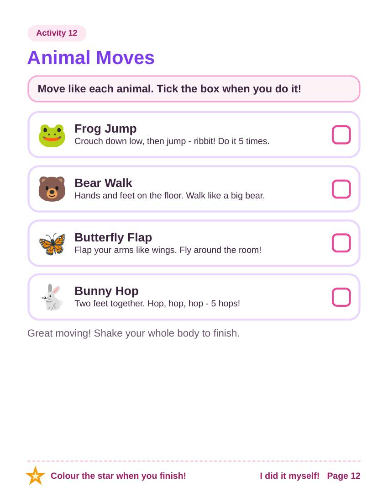
Show the text of this page
Activity 12 Animal Moves Move like each animal. Tick the box when you do it! 🐸 🐻 🦋 🐇 Frog Jump Crouch down low, then jump - ribbit! Do it 5 times. Bear Walk Hands and feet on the floor. Walk like a big bear. Butterfly Flap Flap your arms like wings. Fly around the room! Bunny Hop Two feet together. Hop, hop, hop - 5 hops! Great moving! Shake your whole body to finish. ★ Colour the star when you finish! I did it myself! Page 12
Activity 13: Draw and Sing
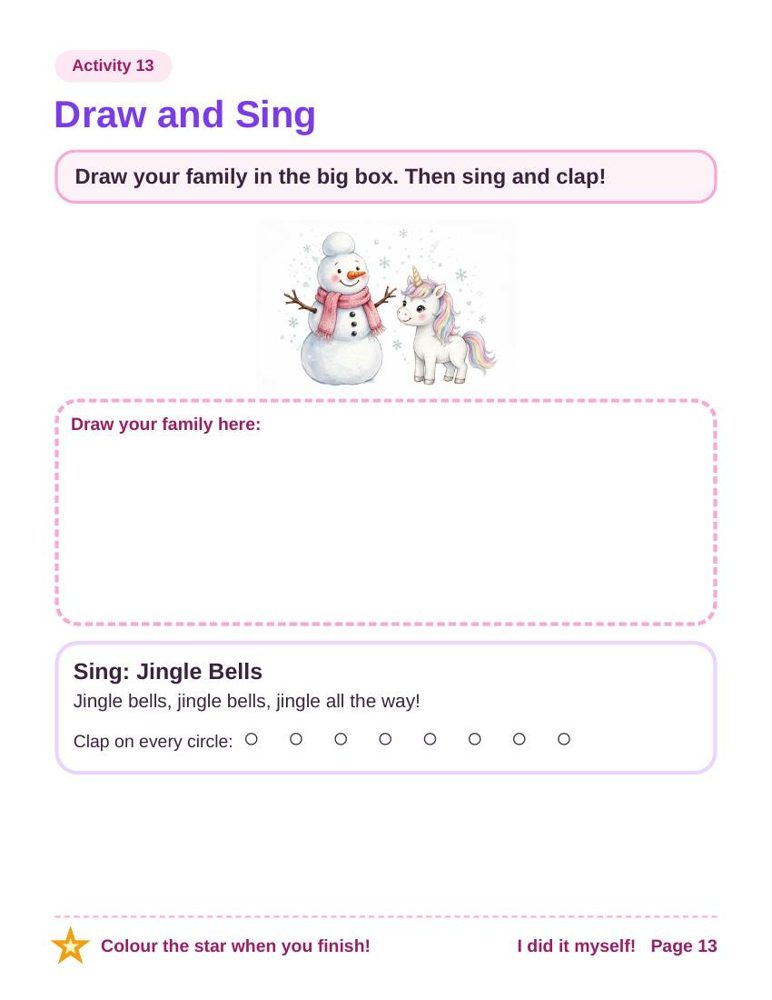
Show the text of this page
Activity 13 Draw and Sing Draw your family in the big box. Then sing and clap! Draw your family here: Sing: Jingle Bells Jingle bells, jingle bells, jingle all the way! Clap on every circle: ○ ★ ○ ○ Colour the star when you finish! ○ ○ ○ ○ ○ I did it myself! Page 13
Activity 14: I Am Thankful
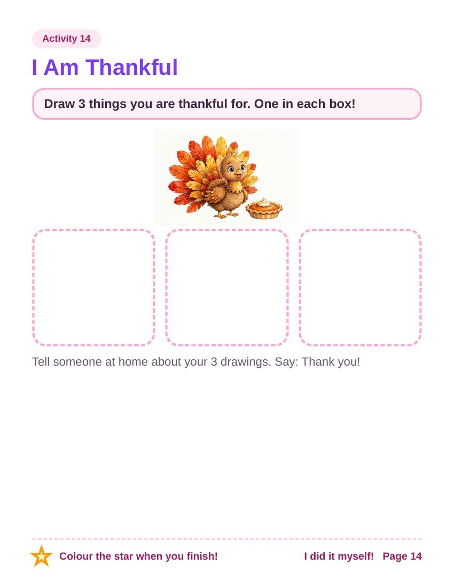
Show the text of this page
Activity 14 I Am Thankful Draw 3 things you are thankful for. One in each box! Tell someone at home about your 3 drawings. Say: Thank you! ★ Colour the star when you finish! I did it myself! Page 14
Activity 15: Day, Night and Growing
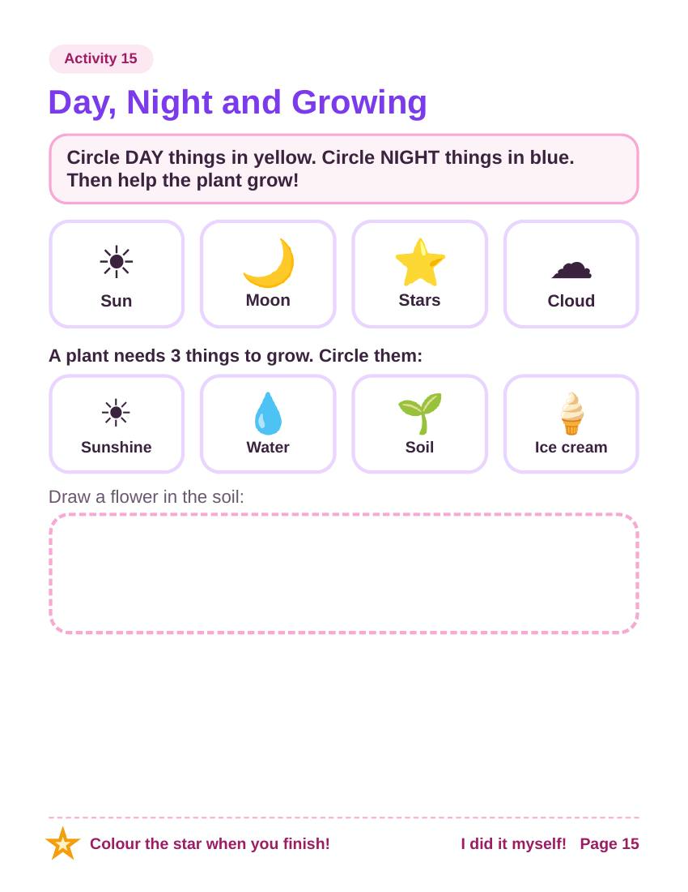
Show the text of this page
Activity 15 Day, Night and Growing Circle DAY things in yellow. Circle NIGHT things in blue. Then help the plant grow! ☀ Sun 🌙 ⭐ Moon Stars Cloud 💧 🌱 🍦 A plant needs 3 things to grow. Circle them: ☀ Sunshine Water Soil ☁ Ice cream Draw a flower in the soil: ★ Colour the star when you finish! I did it myself! Page 15